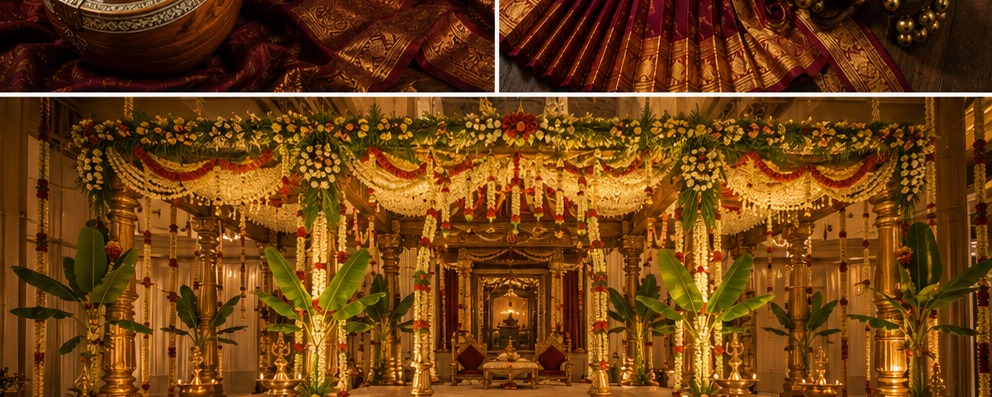
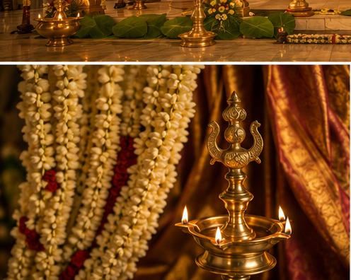
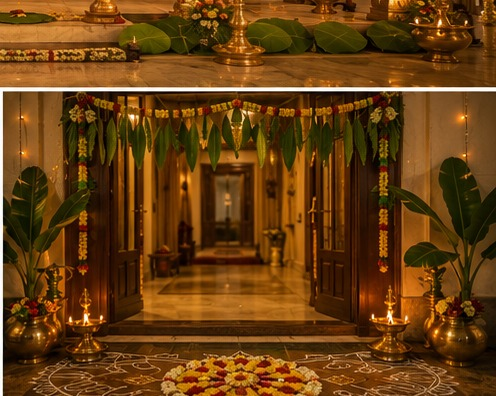
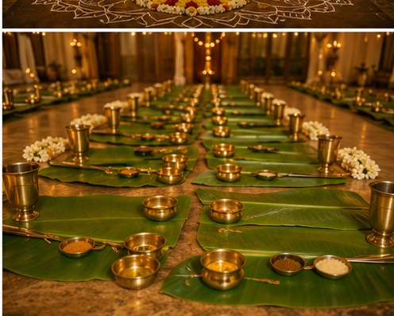

The Mandapam
South Indian Hindu weddings, including those within Sri Vaishnava families, are traditionally held under a mandapam — a decorated ceremonial structure, often open-pillared, dressed in fresh flower garlands (jasmine is a favorite for its fragrance), mango leaf toranams hung across doorways, and rows of lit brass lamps. The mandapam functions as a temporary sacred space, built fresh for the occasion and taken down once the rites are complete.

A Multi-Day Affair
Traditional South Indian Hindu weddings frequently unfold across several days rather than a single ceremony, with distinct rituals, songs, and gatherings for each stage — engagement, pre-wedding blessings, the wedding rites themselves, and post-wedding functions that welcome the new couple. Carnatic music and, at some functions, classical dance performances are common features of these celebratory events, tying the occasion back to the broader artistic tradition.


Food as the Centerpiece
No Iyengar function is complete without an elaborate vegetarian meal, traditionally served on a banana leaf in a specific order — a practice this journey touches on throughout the site's spice and recipe pages. Functions are, in a very real sense, when the everyday podi and kuzhambu repertoire scales up: the same dishes made in home kitchens daily are prepared in much larger quantity, often by extended family working together, for hundreds of guests.

A Note on Variation
Exact rites, sequencing, and customs vary meaningfully by family, region, and sect (Vadakalai and Tenkalai households may differ in small but specific ways). What's described here reflects general, widely-recognized patterns rather than a single prescriptive account — if you're planning or attending a specific family's function, the details are always best confirmed with that family directly.